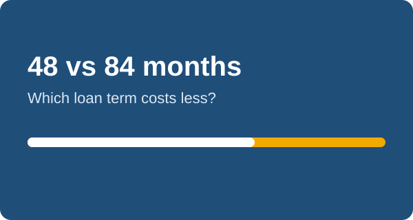

Car Loan Term Compared: 48, 60, 72 or 84 Months?

The loan term is the lever that changes your payment the most. A longer term lowers the monthly bill, but you pay for it in interest. Here is a clear comparison so you can choose with real numbers.
Same loan, four terms
Example: you borrow $26,000 at 6.5% APR.
- 48 months: about $616 a month, about $3,590 total interest.
- 60 months: about $509 a month, about $4,510 interest.
- 72 months: about $437 a month, about $5,460 interest.
- 84 months: about $386 a month, about $6,430 interest.
Going from 48 to 84 months cuts the payment by roughly $230 but adds about $2,840 in interest.
The hidden risk of long loans
Cars lose value quickly. On a long loan your balance falls slowly, so you can owe more than the car is worth. This is called negative equity, and it hurts if the car is totaled or you want to sell. Lenders also often charge higher rates on longer terms.
How to choose
- Pick the shortest term whose payment fits your budget comfortably.
- If you need a long term to afford the car, consider a cheaper car instead.
- Choose a loan with no prepayment penalty, so you can pay extra when you can.
Test your own price and rate in the calculator by switching the term menu and comparing the total interest.
Next: How Car Loan Payments Are Calculated (Formula and Example)